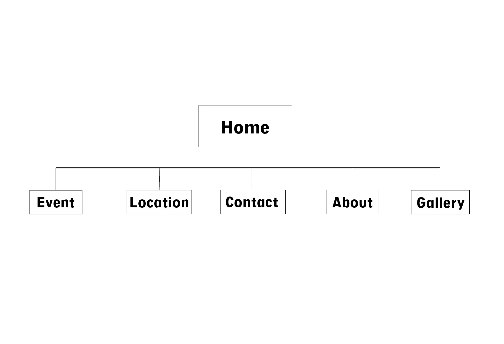
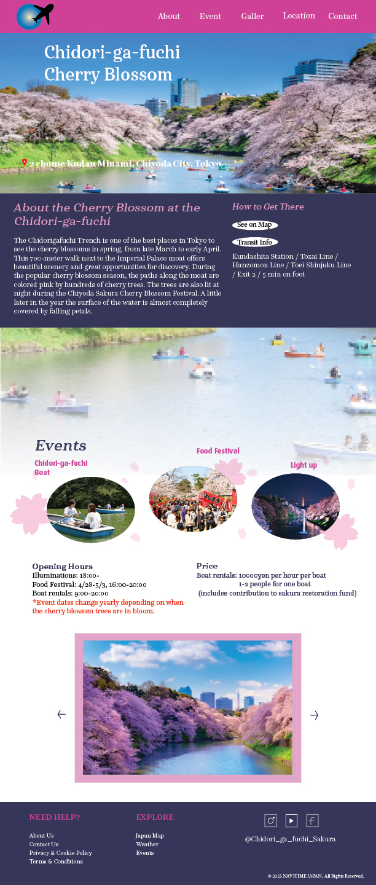
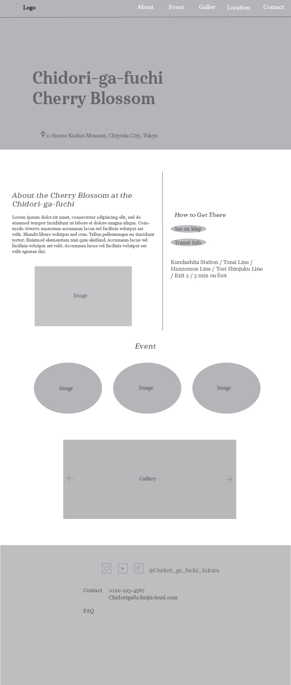
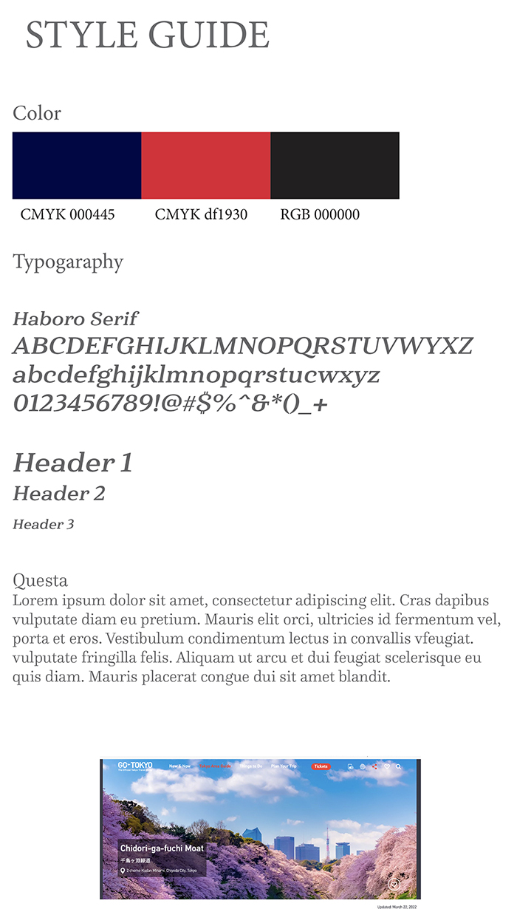

Client: School Project
Project Type: Interface Design
Compentencies: UX/UI Design
Softwar: Figma, Photoshop
Overview
In this project, I designed a fictional website introducing places to see cherry blossoms in Japan, and then used coding in another class to bring the website to life.
Site Map



Lo-Fi Wireframe
Challenge
The first challenge was crafting the layout, visual design, and overall user experience. The next was translating these concepts into an interactive website through front-end development with HTML, CSS and Japa . From there, I focused on ensuring responsiveness across devices, enhancing accessibility for all users, and optimizing performance to create a polished.
Solution
For the interface design, I focused on the visual experience since cherry blossoms are primarily appreciated through sight. I incorporated rich visual elements, arranging the background images so they connect seamlessly. While I used striking colors, I kept the overall design simple to maintain user-friendliness. On the programming side, I began with a rough layout and color styling using HTML and CSS. Afterwards, I adjusted animations and element sizes, and also used JavaScript to add additional animations.

Cheery blossom in Tokyo
For this website, I applied cool tones and the Harboro Serif typeface to convey Tokyo’s distinctly urban character. The design emphasizes the cityscape, dominated by buildings and trains rather than natural elements, creating a visual hierarchy that guides the user’s focus while maintaining readability and aesthetic balance.
The Final
In the final version, the website is implemented as a single-page design with fully functional navigation buttons. I incorporated a falling cherry blossom animation to create a dynamic visual effect, enhancing the user experience and reinforcing the thematic connection to Tokyo’s seasonal aesthetics.